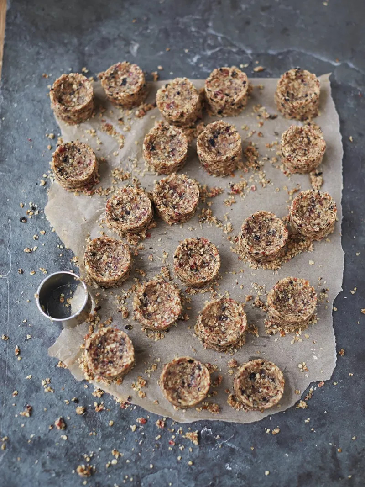

Raw vegan flapjacks

Ingredients
- 100g unsalted peacans
- 100g unsalted hazelnuts
- 20g mixed seeds, such as linseeds or chia
- 180g Medjool dates
- 100g mixed dried berries, such as blueberries or cranberries.´
- 200g porridge oats
- 2 tablespoons oil
- 1-2 tablespoons maple syrup
Steps
- Place the pecans, hazelnuts, seeds and destoned dates and berries in a food processor and blitz until nicely chopped together.
- Add oats, oil and maple syrup and pulse until combined, although with texture.
- Crunch and squash into a rough sausage then divide into 24 flapjacks.
- Pat and push the portions firmly into a pastry cutter. As you push it down, remove the cutter to give you a round flapjack snack.
- Place the snacks in an airtight container, they will keep for up to two weeks. You can bag and freeze for a later date.